Sách mới
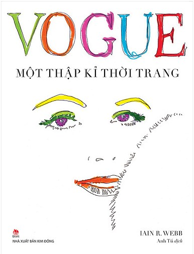
Cuốn sách mở ra một tủ đồ trong mơ lộng lẫy, ở đó có những bộ đầm dạ hội xa hoa, những chiếc váy đi tiệc cocktail duyên dáng, những bộ suit lịch lãm cùng những món phụ kiện ấn tượng, được làm ra dưới bàn tay các nhà thiết kế danh tiếng như Cristian Dior, Banciaga, Givenchy và Chanel.
Bán nhiều nhất tháng
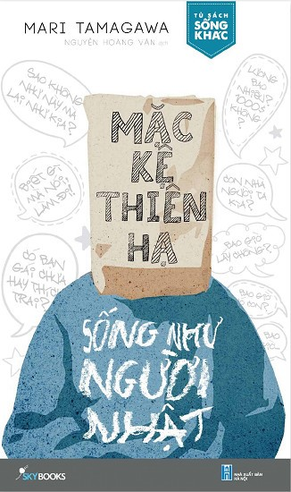
Và Mặc hệ thiên hạ, sống như người Nhật chính là cuốn sách dành cho những người muốn đi bằng chính đôi chân mình. Dành cho những người muốn gạt bỏ những nỗi sợ bởi chính tay mình, chứ không cầu cứu bất kì sự trợ giúp nào.
Được bạn đọc yêu thích nhất
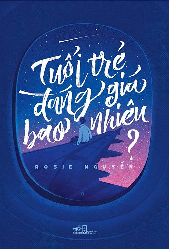
Tuổi Trẻ Đáng Giá Bao Nhiêu. "Bạn hối tiếc vì không nắm bắt lấy một cơ hội nào đó, chẳng có ai phải mất ngủ. Bạn trải qua những ngày tháng nhạt nhẽo với công việc bạn căm ghét, người ta chẳng hề bận lòng.. Bạn có chết mòn nơi xó tường với những ước mơ dang dở, đó không phải là việc của họ. Suy cho cùng, quyết định là ở bạn.
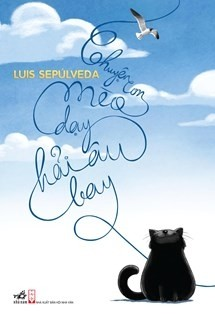
Cô hải âu Kengah bị nhấn chìm trong váng dầu – thứ chất thải nguy hiểm mà những con người xấu xa bí mật đổ ra đại dương. Với nỗ lực đầy tuyệt vọng, cô bay vào bến cảng Hamburg và rơi xuống ban công của con mèo mun, to đùng, mập ú Zorba.
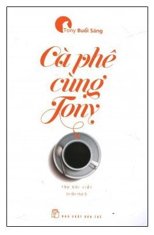
Có đôi khi vào những tháng năm bắt đầu vào đời, giữa vô vàn ngả rẽ và lời khuyên, khi rất nhiều dự định mà thiếu đôi phần định hướng, thì CẢM HỨNG là điều quan trọng để bạn trẻ bắt đầu bước chân đầu tiên trên con đường theo đuổi giấc mơ của mình.
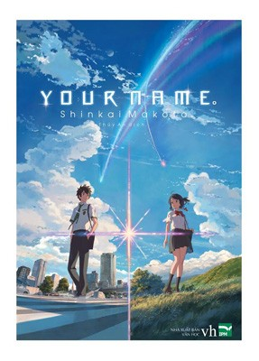
Mitsuha là nữ sinh trung học sống ở vùng quê hẻo lánh. Một ngày nọ, cô mơ thấy mình ở Tokyo trong một căn phòng xa lạ, biến thành con trai, gặp những người bạn chưa từng quen biết.
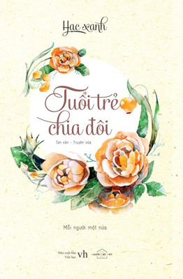
“Đã có lúc tôi tự hỏi, thành phố này đủ rộng để lạc mất nhau, cũng đủ chật để những kẻ không ưa nhau vẫn hoài gặp gỡ. Vậy mà mình, đến cuối cùng, vẫn không thể tìm thấy một hình bóng chung đôi?”.
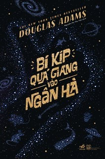
Câu chuyện sẽ không mộng mơ hay nghiêm túc như bạn tưởng, mà quay cuồng giữa những trò khôi hài, ngẫu hứng, điên rồ.
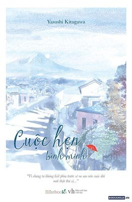
Nếu bạn đang phân vân giữa những chọn lựa của ước mơ và hiện thực. Nếu bạn đang mất niềm tin vào thế giới mình đang sống.
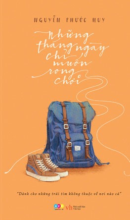
“Sống thì nghĩ nhiều, nhưng rong chơi thì phải đơn giản. Nhiều khi tôi cũng thấy đôi chân của mình ham rong chơi thật, đã đi, là đi mãi.”
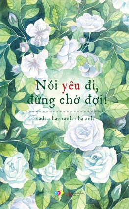
Thanh xuân là một khoảng thời gian tươi đẹp, trong sáng và thuần khiết. Ai đã từng đi qua nó, đều cảm thấy bồi hồi.